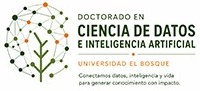
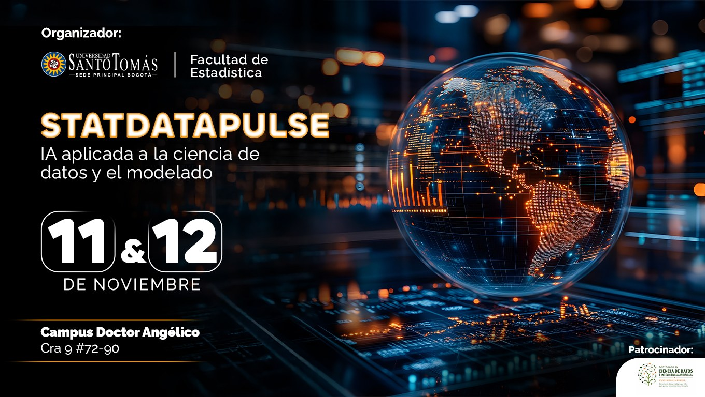

FACULTAD DE ESTADÍSTICA · UNIVERSIDAD SANTO TOMÁS
IA aplicada a la ciencia de datos y el modelado
DE NOVIEMBREDE 2026
Campus Doctor Angélico · Cra 9 #72-90, Bogotá
Inscripciones abiertas · pago hasta el 10 de noviembre

Cuando el modelo aprende, la estadística decide

La edición 2026 del simposio se concentra en un punto concreto: qué cambia en el trabajo estadístico cuando la inteligencia artificial entra al proceso de modelado. Dos días de charlas y cursillos prácticos sobre agentes de IA, modelos estocásticos y riesgo, con código en la mano.
Organiza la Facultad de Estadística de la Universidad Santo Tomás, con el patrocinio del Doctorado en Ciencia de Datos e Inteligencia Artificial de la Universidad El Bosque. Está dirigido a estudiantes, docentes, investigadores y profesionales que trabajen con datos.
Dos días, dos rutas paralelas
Los tres cursillos del 11 de noviembre tienen segunda sesión este día. El comité está definiendo en qué ruta y a qué hora va cada uno.
Ponentes y talleristas
Las fotografías reemplazarán las iniciales cuando el comité las envíe.
Comité organizador
Convocatoria y recursos
Convocatoria de trabajos
Comunicaciones cortas de 20 minutos y pósteres. Resumen de máximo 300 palabras en PDF, hasta el 11 de octubre.
Postular trabajoRepositorios de cursillos
Código, datos y cuadernos de cada cursillo, publicados durante el evento.
AccederPresentaciones y resúmenes
Material de las conferencias y los pósteres, disponible tras cada sesión.
Ver materialesInscripciones abiertas
Cada perfil tiene su propio enlace y su propio valor. Busca el tuyo y elige si eres de la comunidad USTA o externo: el enlace te lleva a la plataforma de la Universidad con esa categoría ya seleccionada.
Inscripciones abiertas desde el 28 de septiembre de 2026.
-
Estudiante de pregrado, Comunidad USTA $90.000 Inscribirme Estudiante de pregrado, Externo $120.000 Inscribirme
Estudiante de pregrado
-
Estudiante de posgrado, Comunidad USTA $170.000 Inscribirme Estudiante de posgrado, Externo $170.000 Inscribirme
Estudiante de posgrado
-
Profesor, Comunidad USTA $190.000 Inscribirme Profesor, Externo $210.000 Inscribirme
Profesor
-
Otros participantes, Tarifa única $220.000 Inscribirme
Otros participantes
Si no estás en ninguna de las categorías anteriores.
- El enlace abre la plataforma de Educación Continua en otra pestaña, con el panel «Horario» de tu categoría. Para seguir, pulsa el botón verde + de ese panel.
- Valores en pesos colombianos. Los cursillos tienen cupo limitado y se asignan en orden de inscripción.
- Los autores de los trabajos aceptados en la convocatoria también se inscriben y pagan, en la categoría que les corresponda.
- ¿Dudas con la inscripción? Escribe a javiersierra@usta.edu.co.